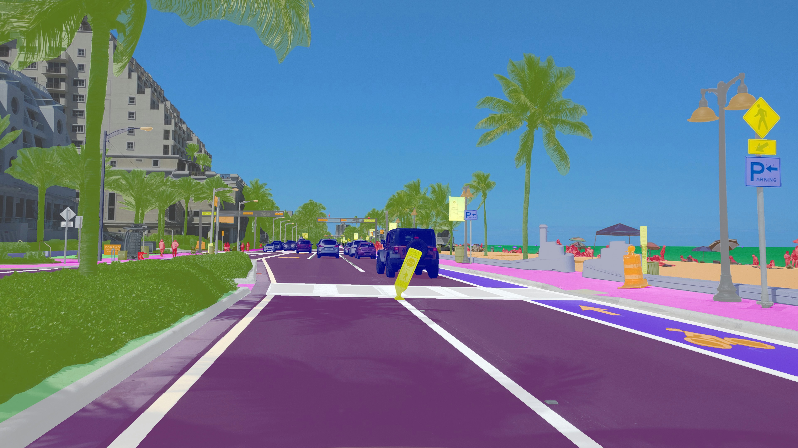
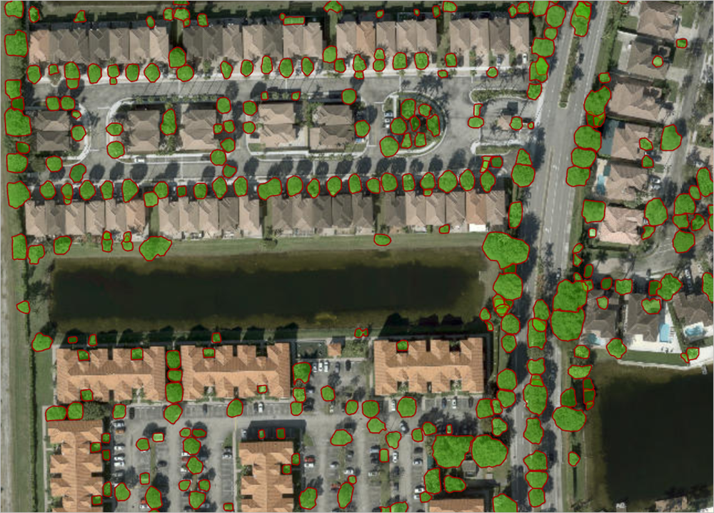

What today's models can see, hear, and make — and how to put existing models to work on your data without becoming an ML engineer.
Public-health example: a multiple linear regression predicting an outcome from a few variables is still "ML" — you don't need a neural network for everything.
A neuron outputs a single number: a weighted sum of its inputs, passed through a nonlinear activation function.
The nonlinearity is what lets stacked neurons model curves and interactions a straight weighted sum never could.
Connect neurons into layers. Data flows in one side; each hidden layer builds on the last, learning more abstract features.
The final layer outputs a probability for each class.
The final layer outputs a single continuous number.
Same body, different head — the network is shaped to the task by its output layer and loss.
Compare the prediction to the truth, measure the error, then push the weights in the direction that reduces it — over and over.
Convolutional nets process 2D/3D visual data. Learned convolution filters extract visual features layer by layer.
Real life: face & character recognition, tracking, video segmentation.
Graph neural nets process structured graph data. Nodes carry feature vectors that are combined via learned graph convolutions.
Real life: social networks, molecules, road networks.
Process sequences with long range. Attention compares every element to every other to find what matters — applicable to any data type.
Real life: large language models.
All three are deep networks trained the same way — they differ in how they connect neurons to suit images, graphs, or sequences.
The old "AI development life cycle" still matters when you truly need a custom model — but for most urban-health work, you'll use and adapt, not build.
Instructions, examples, and system prompts. Start here.
Let the model read your documents at query time (e.g., NotebookLM).
Give it actions — search, run code, query a database (Day 3).
Further-train on your examples for a narrow, repeated task.
Climb the ladder only as far as you need: most problems are solved at prompt or retrieval level.
Upload files, build "projects" with persistent knowledge, attach data to a conversation.
Call models from code to process data at scale and embed them in your workflows.
The open standard for connecting models to tools — MCP — and agents that use it are tomorrow's focus (Day 3).
For sensitive health data, a capable local model is often the responsible default — even if it's a notch below the frontier.
| Your situation | Reach for |
|---|---|
| One-off question or drafting | Frontier chat model, good prompt |
| Answers grounded in your documents | Retrieval / projects (e.g., NotebookLM) |
| Repeated, large-scale processing | API + scripting |
| Sensitive or protected data | Open model run locally |
| A narrow task done thousands of times | Fine-tune a smaller model |
| Multi-step work across tools | An agent (Day 3) |
A multimodal model takes in and produces several data types at once — you can show it an image and ask a question about it in the same prompt.
Today we go deeper on each non-text modality — and how they apply to urban health.

One label for the whole image.
Rectangles around objects.
Every pixel labeled by region.
Each object separated individually.
Labels (annotations) are how supervised vision models learn — and what you produce in today's annotation activity.
OpenCV, scikit-image — filtering, edges, thresholds. Still useful, no deep learning needed.
YOLO (real-time), DETR (transformer-based), Faster R-CNN — find and box objects.
SAM / SAM 2 (segment anything), Mask R-CNN — pixel-level and instance masks.
DINO / DINOv2 — strong general-purpose image features without labels.
CLIP, OWL-ViT — connect images and text; search or label by description (zero-shot).
Built-environment audits, pedestrian/vehicle detection, green space, informal settlements.
Many tasks combine these — e.g., YOLO to detect, then SAM to segment. The frontier multimodal chat models can also do much of this from a prompt.
Specific versions change fast; the workflow (prompt → diffusion → edit) is what stays constant.
Fake images passed off as real evidence.
Impersonation of real people.
Using real people's likenesses without permission.
Training data stereotypes show up in outputs.
For research and public communication: disclose AI-generated imagery, and never present synthetic images as documentary evidence.
Cautionary tale: OpenAI shut down Sora in April 2026 — ~$1M/day in compute, fading engagement, and copyright/likeness lawsuits. A reminder that AI video is costly and legally fraught; verify and disclose.
Interviews, focus groups.
Whisper, AssemblyAI, Deepgram, Otter
Multilingual speech & text.
SeamlessM4T (Meta), Google, DeepL
Natural voices for accessible materials.
ElevenLabs, OpenAI TTS, PlayHT
Summaries & action items.
Otter, Fireflies, Zoom/Teams Copilot
Huge time-saver for qualitative work — but transcripts and recordings are sensitive data; mind consent and storage.
Still verify against the original sources — grounding lowers, but doesn't eliminate, errors.
"Summarize this dataset, map the most heat-vulnerable neighborhoods, and give me the R code to reproduce the map." → descriptive stats, a choropleth, and runnable code you check and adapt.
Summary stats, distributions, correlations.
Clustering, segmentation, anomaly detection.
Charts, dashboards, pattern visualization.
R, Python, and Stata syntax you can run yourself.
Best used as a fast first pass and a coding partner — you remain the analyst of record.

Land use, building detection, urban growth.
Pollution and emissions monitoring.
Temperature variation, climate resilience.
Vegetation, park access, equity.
Plausible-looking statistics that are simply wrong.
Code that runs but computes the wrong thing.
Uploads may not be secure or de-identified.
Garbage in, garbage out — source data matters.
Training-data bias shapes results and advice.
Reproduce results in code; never paste protected data into a public tool.
Practice classification, boxes, and segmentation with a vision tool.
Create and critically evaluate AI images.
Philadelphia Heat Vulnerability Index from OpenDataPhilly.
NotebookLM on a set of papers; optional transcript coding.